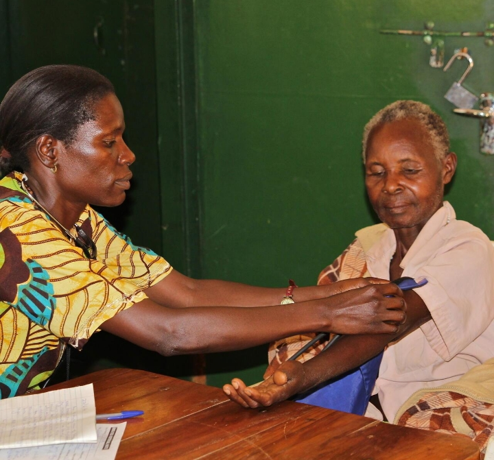

Supporting Displaced Families
Families forced to leave their homes may need access to shelter, essential supplies, protection and other basic services as they rebuild their lives.
Behind every humanitarian response are people, families and communities working towards a better future.
Families forced to leave their homes may need access to shelter, essential supplies, protection and other basic services as they rebuild their lives.

Education gives children opportunities to develop knowledge, skills and confidence, even during difficult circumstances.

Access to healthcare, information and essential services can help individuals and families live healthier lives.
Humanitarian assistance can help people overcome challenges, restore dignity and create opportunities for a better future.
Contact Us